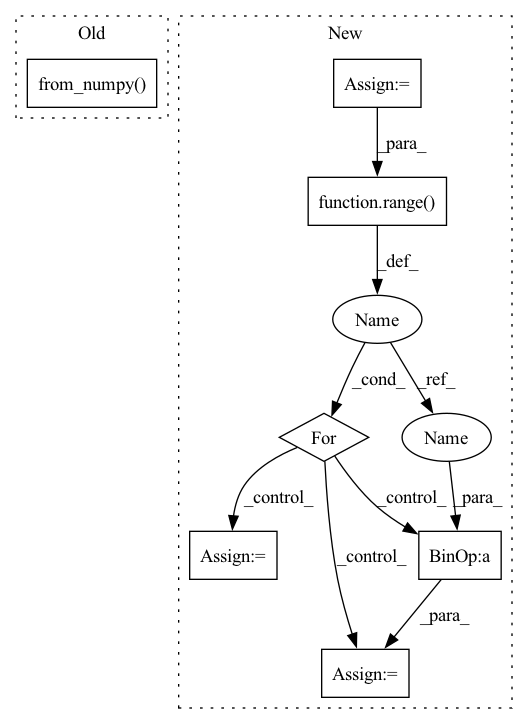

Pattern ID :2782
Before Change
mmg = mask[i].squeeze()
data[i] = cv2.warpAffine(img, M, (W, H), flags=cv2.INTER_CUBIC).reshape(C, H, W)
mask[i] = cv2.warpAffine(mmg, M, (W, H), flags=cv2.INTER_CUBIC).reshape(C, H, W)
T_aug += [torch.from_numpy( get_transform(0, 0, -rot)) ]
else:
T_aug += [torch.from_numpy(np.identity(4, dtype=np.float32))]
batch["data"] = torch.from_numpy(data)After Change
def augmentBatch(batch, config):
rot_max = config["augmentation"]["rot_max"]
batch_size = config["batch_size"]
window_size = config["window_size"]
data = batch["data"].numpy()
mask = batch["mask"].numpy()
T_21 = batch["T_21"].numpy()
_, C, H, W = data.shape
for i in range(batch_size):
rot = np.random.uniform(-rot_max, rot_max)
T = get_transform(0, 0, -rot)
for j in range( 1, window_size):
k = j + i * window_size
img = data[k].squeeze()
mmg = mask[k].squeeze()
M = cv2.getRotationMatrix2D((W / 2, H / 2), rot * 180 * j / np.pi, 1.0)
data[i] = cv2.warpAffine(img, M, (W, H), flags=cv2.INTER_CUBIC).reshape(C, H, W)In pattern: SUPERPATTERN
Frequency: 3
Non-data size: 7
Instances Fragment ID: 11138701
Project Name: utiasasrl/hero_radar_odometry
Commit Name: 69b518ec294c236dc4305129ec07282c5d2e007c
Time: 2021-03-04
Author: keenburn2004@gmail.com
File Name: datasets/transforms.py
M Class Name: AnonimousClass
N Class Name: AnonimousClass
M Method Name: augmentBatch(2)
N Method Name: augmentBatch(2)
M Parent Class:
N Parent Class:
M File Name: datasets/transforms.py
N File Name: datasets/transforms.py
M Start Line: 8
M End Line: 28
N Start Line: 10
N End Line: 29
Before Change
mmg = mask[i].squeeze()
data[i] = cv2.warpAffine(img, M, (W, H), flags=cv2.INTER_CUBIC).reshape(C, H, W)
mask[i] = cv2.warpAffine(mmg, M, (W, H), flags=cv2.INTER_CUBIC).reshape(C, H, W)
T_aug += [torch.from_numpy( get_transform(0, 0, -rot)) ]
else:
T_aug += [torch.from_numpy(np.identity(4, dtype=np.float32))]
batch["data"] = torch.from_numpy(data)After Change
def augmentBatch(batch, config):
rot_max = config["augmentation"]["rot_max"]
batch_size = config["batch_size"]
window_size = config["window_size"]
data = batch["data"].numpy()
mask = batch["mask"].numpy()
T_21 = batch["T_21"].numpy()
_, C, H, W = data.shape
for i in range(batch_size):
rot = np.random.uniform(-rot_max, rot_max)
T = get_transform(0, 0, -rot)
for j in range( 1, window_size):
k = j + i * window_size
img = data[k].squeeze()
mmg = mask[k].squeeze()
M = cv2.getRotationMatrix2D((W / 2, H / 2), rot * 180 * j / np.pi, 1.0)
data[i] = cv2.warpAffine(img, M, (W, H), flags=cv2.INTER_CUBIC).reshape(C, H, W)
mask[i] = cv2.warpAffine(mmg, M, (W, H), flags=cv2.INTER_CUBIC).reshape(1, H, W)
T_21[i - 1] = np.matmul(T, T_21[i - 1])
batch["data"] = torch.from_numpy(data)
batch["mask"] = torch.from_numpy(mask > 0.5).type(batch["data"].dtype) // make into a binary mask
batch["T_21"] = torch.from_numpy(T_21) Fragment ID: 11138687
Project Name: utiasasrl/hero_radar_odometry
Commit Name: 69b518ec294c236dc4305129ec07282c5d2e007c
Time: 2021-03-04
Author: keenburn2004@gmail.com
File Name: datasets/transforms.py
M Class Name: AnonimousClass
N Class Name: AnonimousClass
M Method Name: augmentBatch(2)
N Method Name: augmentBatch(2)
M Parent Class:
N Parent Class:
M File Name: datasets/transforms.py
N File Name: datasets/transforms.py
M Start Line: 8
M End Line: 28
N Start Line: 10
N End Line: 29
Before Change
x_test = dataset.prepare("test", col_set="feature")
index = x_test.index
x_test = torch.from_numpy( x_test.values) .float()
x_test = x_test.to(self.device)
self.sfm_model.eval()After Change
index = x_test.index
self.sfm_model.eval()
x_values = x_test.values
sample_num = x_values.shape[0]
preds = []
for begin in range( sample_num) [::self.batch_size]:
if sample_num-begin<self.batch_size:
end = sample_num
else:
end = begin + self.batch_size
x_batch = torch.from_numpy(x_values[begin:end]).float()
if self.device != "cpu":
x_batch = x_batch.to(self.device)
with torch.no_grad():
if self.device != "cpu": Fragment ID: 11138688
Project Name: microsoft/qlib
Commit Name: 64b7748033326b0aaa3c4c907ccd9b2d353d553d
Time: 2020-11-25
Author: haouyw2@gmail.com
File Name: qlib/contrib/model/pytorch_sfm.py
M Class Name: SFM
N Class Name: SFM
M Method Name: predict(2)
N Method Name: predict(2)
M Parent Class: Model
N Parent Class: Model
M File Name: qlib/contrib/model/pytorch_sfm.py
N File Name: qlib/contrib/model/pytorch_sfm.py
M Start Line: 415
M End Line: 427
N Start Line: 420
N End Line: 445
Before Change
x_test = dataset.prepare("test", col_set="feature")
index = x_test.index
x_test = torch.from_numpy( x_test.values) .float()
if self.use_gpu:
x_test = x_test.cuda()After Change
index = x_test.index
self.gru_model.eval()
x_values = x_test.values
sample_num = x_values.shape[0]
preds = []
for begin in range( sample_num) [::self.batch_size]:
if sample_num-begin < self.batch_size:
end = sample_num
else:
end = begin+ self.batch_size
x_batch = torch.from_numpy(x_values[begin:end]).float()
if self.use_gpu: Fragment ID: 11138678
Project Name: microsoft/qlib
Commit Name: 0afe57f2fe2cac385951ad7cce1fc0066b7720f5
Time: 2020-11-16
Author: Lewen.Wang@microsoft.com
File Name: qlib/contrib/model/pytorch_gru.py
M Class Name: GRU
N Class Name: GRU
M Method Name: predict(2)
N Method Name: predict(2)
M Parent Class: Model
N Parent Class: Model
M File Name: qlib/contrib/model/pytorch_gru.py
N File Name: qlib/contrib/model/pytorch_gru.py
M Start Line: 281
M End Line: 294
N Start Line: 295
N End Line: 323